Syzygy: Example Code
Several demos are included with the Syzygy toolkit. The hope is that this will make it easy to go from simply having a collection of networked computers to running cluster-based virtual reality applications in very little time! The demos are of two basic types: distributed scene graph and application peers (i.e master/slave).
| Name | Source Code | Description | Data distribution required |
|---|---|---|---|
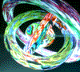 | src/demo/cosmos | Four nested tori spinning about different axes. | Base |
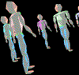 | src/demo/parade | Icosahedral marching "blobbymen". Reference: Jim Blinn, "Nested Transformations and Blobby Man", IEEE Trans. Graphics Oct. 1987, 59-65. | Base |
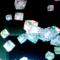 | src/demo/cubes | 300 cubes hang in space. They drift slowly, spin furiously, and change textures. A good stress test for your network. | Base |
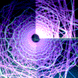 | src/demo/timetunnel | Visualization of timing and inter-node communication in a parallel MPI code. (The animation finishes after a few minutes.) | Optional |
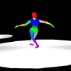 | szgdemo/danceparty/src | A stage floating in space hosts five motion-captured dancers who move in short looping motions. | Optional |
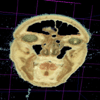 | szgdemo/salamiman/src | Visualization of the Visible Human data set. A cut-plane interactively slices through the data volume. |
To get the raw data, fill out a request at the
National Library of Medicine.
The data volume shown here comes from the male head dataset
head/a_vm1001.raw - head/a_vm1377.raw (377 images, 2048x1216, 24-bit RGB).
This is cropped to 750x750 and then decimated by a factor of two,
yielding a data cube 375 voxels on a side.
Non-body bluish voxels (empirically, b>r*3/2 && b>g*4/3)
are forced to pure blue (r=0; g=0; b=255) for simple culling at runtime.
For fun, generate any 375x375x375 24-bit RGB data volume called rgbbrain3Deci.dat. Sinusoids and sawtooth functions of x/y/z / r/g/b are psychedelic. |
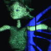 | szgdemo/internet2-02/src | Replays motion capture data from a 7 minute long dance performance. | Data only on release CD due to size. |
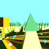 | szgdemo/info-forest/src | An information visualization using a forest metaphor. | Optional |
| Name | Source Code | Description | Data distribution required |
|---|---|---|---|
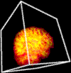 | src/demo | Texture-slice based volume visualization. It loads 10 files on start-up: cavebrain.(0-9).img. Each file is approximately a 100x100x100 voxel model with a single byte intensity per voxel. The user can grab the model and rotate it, cycle through the models, and navigate around the virtual space. | Optional |
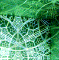 | src/demo/hspace | A visualization of hyperbolic geometry, non-Euclidean three-space tiled with dodecahedra. The projection into Euclidean space is controlled by the joystick (backwards/fowards plus what looks like a rotate). | Base |
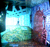 | src/demo/q33 | A viewer for levels of the game Quake III. To use this, get the file pak0.pk3 and place it in the q33 subdirectory of the Syzygy data directory. This file is available from a Quake III CD (/Quake3/baseq3/pak0.pk3); downloading it is tricky since it's almost half a gigabyte. | Optional plus buying the game. |
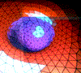 | src/demo/avn | The Optiverse eversion (turning inside-out) of a sphere. | Optional |
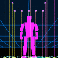 | src/demo/schprel | A visualization of the warping effects caused by travelling near the speed of light. | Base |
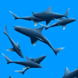 | src/demo/atlantis | A port of the GLUT demo to our system. A school of dolphins, sharks, and whales swims around in a clustered formation. | Base |
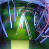 | src/demo/coaster | A port of the GLUT demo. Ride a roller coaster. | Optional |
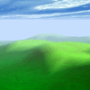 | szgdemo/skyfly/src | A port of the GLUT demo. Fly over mountains as paper airplanes flock around your head. | Optional |
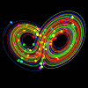 | szgdemo/szglorenz/src | An exploration of the lorenz attractor in virtual reality. | Base |
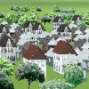 | szgdemo/landspeeder/src | An urban planning visualization. | Data on the CD. |
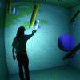 | szgdemo/vtkfile/src | Part of the MAEViz earthquake visualization application. Shows how to use VTK with Syzygy. | Optional |
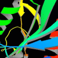 | szgdemo/VRMLView/src | A viewer for VRML files based on the Coin3D library. | Optional |
Running Additional Demos
As the tables above show, many of the demos require you to first install the optional data distribution.
There are two basic ways to interact with the demos: a VR interface (6DOF tracking) and a desktop simulator of the VR interface (explained in the Input Devices chapter).
cosmos, parade, timetunnel, cubes: Push forward on the joystick to move in the direction pointed to by the sensor attached to the joystick; push back to go backwards. While grabbing the object with button 0, rotate the joystick to rotate the object.
avn: only navigation is implemented, not grabbing.
volume: in addition to navigation, press button 0 to step to the next data volume. Grab the data volume with button 2 to rotate it.
q33: move the joystick sideways to rotate the POV; conventional navigation works as well.
salamiman: Grab the cut plane with button 0 to rotate and translate it. Grab the data volume (and the cut plane, implicitly) with button 1 to rotate and translate it. Button 2 toggles the size of the data volume.
skyfly: Hold the wand away from your head to fly in that direction. Tilt the wand up or down to rise or fall.
szglorenz: See szgdemo/szglorenz/README for an explanation of the controls.
Performance Tuning
Automatic performance tuning code has not yet been integrated into the codebase. Many of the demos, especially the master/slave (otherwise known as application distribution), do not require high performance. However, some of the distributed scene graph demos, notably timetunnel and cubes, can move more data on high-end hardware. To get the most performance out of these: